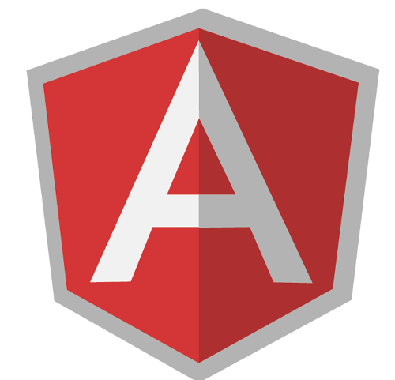

AngularJS
Sebastian Mancke
Creative Commons BY-SA 3.0
AngularJS - Einordnung
Kernkonzepte
- Umfassendes MVC Framework
- Ausgerichtet auf Single Page Apps
- Browser-Seitiges Templating
- Designed auf Testbarkeit
Abgrenzung
- zu JQuery: Deklarativ, wenig Hacking im DOM
- zu Knockout.JS: Viel umfassender
AngularJS
Key concepts
- Comprehensive MVC framework
- Targeting single page apps
- In browser templating
- Designed for testability
Segregation
- to JQuery: Declarative, without hacking in the DOM
- to Knockout.JS: More comprehensive
Die Basics
Basics
Deklaration und Includes
Declaration and Includes
<html ng-app="presentation">
...
<script src="./lib/jquery.min.js"></script>
<script src="./lib/angular.min.js"></script>
<script>
var app = angular.module('presentation', []);
</script>
- Die
ng-app Anweisung initialisiert die Anwendung
- angular.min.js ~ 97K
- Initialisierungszeit inkl. JQuery: ~250ms
- Nutzt JQuery, kann aber auch ohne (eingeschränkte Funktionalität)
- The
ng-app initializes the application
- angular.min.js ~ 97K
- Loading an initialization time incl. JQuery: ~250ms
- Uses JQuery, but also has a minimal build in replacement (reduced functionality)
Einfache Bindings {{demo}}
Simple bindings {{demo}}
AngularJS ermöglicht ein Templating direkt im Browser.
AngularJS utilizes templating in the browser.
Demo: {{demo}}
Bindings - weitere Beispiele
Bindings - further examples
AngularJS verfügt über eine Reihe praktischer Hilfsmittel für Bindings:
AngularJS has a lot of useful tools for the bindings:
ng-model, ng-if, ng-init
<h3 ng-if="state == 'enabled'">AngularJS is cool!</h3>
Bindings - classen und styles
Bindings - classes and styles
Für typische HTML-Aufgaben hat AngularJS passende Direktiven.
AngularJS has directives for all typical HTML styling work.
ng-class
This is the message
ng-style
Sample text, myStyle={{myStyle}}
Controller
Logik ist in AngularJS in Controllern organisiert.
The logic is organized within controllers.
- Controller definieren einen Scope für Variablen.
- Initialisierungscode wird direkt ausgeführt.
- Funktionen werden im
$scope agbelegt.
- A controller defines the scope for variables.
- Initialization code will be executed directly.
- Functions are stored in the
$scope variable.
{{answer}}{{question}}
Formatter
Zur Formatierung von Werten gibt es Formater.
Formatters are used for displaying numbers and currencies.
Iteration über Daten
Iteration over data
Mit ng-repeat lassen sich einfach Tabellen und Listen aufbauen.
Tables can be created using ng-repeat.
<table ng-controller="RepeatController">
<tr ng-repeat="person in persons">
<td>{{person.first}}</td> <td>{{person.last}}</td>
</tr>
</table>
| {{person.first}} |
{{person.last}} |
Iteration - Filter + Sortierung
Iteration - filter + sorting
Filter und Sortierung lassen sich einfach einbauen.
Filtering and sorting is very easy.
<tr ng-repeat="person in persons | orderBy:orderField | filter: filterText">
| {{person.first}} |
{{person.last}} |
Scopes
Was sind Scopes?
- Scopes sind die AngularJS-Datenobjekte, die das Modell beinhalten.
- Jeder Ausdruck wird im Kontext eines Scope ausgeführt.
Child Scopes
- Die Scopes sind hierarchisch entlang des DOM geschachtelt.
- Geschachtelte Scopes erben Properties des übergeordneten Scope.
- Eigene Properties sind nach außen nicht sichtbar.
Isolierte Scopes
- Erben keine Daten.
- Können aber Properties über ein Mapping an Parent Scope binden.
Scopes
What are scopes?
- Scopes are the AngularJS data objects holding the model.
- Every function call is done in the context of a scope.
Child scopes
- Scopes can be nested along the DOM's hierarchy.
- Nested scopes inherit the properties of the parent scope.
- The self defined properties are not visible outside.
Isolated Scopes
- They do not inherit properties by default,
- but they can bind properties of the parent scope through a mapping.
Änderungen überwachen
Observing changes
$scope.$watch()
Mit $watch() kann das Datenmodell überwacht werden.
The model can be observed by $watch().
Verwendung:
Usage:
$watch(watchExpression, [listener], [objectEquality]);
$scope.$watchCollection()
Beobachtung der Inhalte von Collections.
Observing the contents of collections.
Verwendung:
Usage:
$watchCollection(obj, listener);
$scope.$watch('backlogItems', function(newValue, oldValue) {
console.log('user has modified "$scope.backlogItems" ..');
..
}, true);
$scope.$apply()
Manipulationen am Datenmodell müssen immer im Kontext von
AngularJS erfolgen. Sonst erfolgt kein Update der View.
Dies kann über $scope.$apply() erzwungen werden.
Häufigste Anwendung:
- window.setTimeout()
- Native DOM-Events
- Einbindung vorhandener Komponenten
$scope.$apply()
Manipulation of the model has to take place in the call context of AngularJS. Otherwise no view updates are triggered.
This can be forced by $scope.$apply().
Most common for:
- window.setTimeout()
- Native DOM-Events
- Integration of existing components
AngularJS Spielereien mit SVG
AngularJS with SVG
Nicht nur HTML lässt sich mit Bindings versehen!
AngularJS bindings are not limited to HTML!
{{date | date:'medium'}}
SVG Spielereien mit AngularJS
SVG with AngularJS
Provider
Geteilte Daten oder zentrale Funktionalität der Controller werden in singleton Objekte ausgelagert.
Provider
- Provider sind die allgemeinste Form
- Können beim Start der App konfiguriert werden
- Aufwändige Schreibweise
Shared data can be externalized to singleton objects.
Provider
- Providers are the most general form
- They can be configured on startup
- Complex syntax
Factories, Services, ..
Einfachere Schreibweisen für Provider.
Simple notation for providers.
Factories
Services
Value, Constant
Dependency injection
Abhängigkeiten in controllern werden 'injected':
The dependencies of controllers can be 'injected':
Alternative Schreibweise:
Alternative syntax:
- Robust gegen minifying
- Namen in Strings eingeschlossen
- Robust against minifying
- The names are enclosed into strings
Eigene Direktiven
Custom directives
AngularJS stellt viele HTML-Erweiterungen (Direktiven) zur Verfügung.
AngularJS has many HTML extensions (directives) build in.
Eigene Direktiven lassen sich sehr einfach bauen.
It is very easy to build your own directives.
app.directive('name', function () {
return {
restrict: ..
template: ..
replace: ..
templateURL: ..
transclude: ..
link: ..
scope: ..
}
});
Über die Parameter der Direktiven sind sehr unterschiedliche Anwendungsfälle abbildbar.
By using the parameters, different use cases can be achieved.
Direktiven - restrict:
Directives - restrict:
Verwendung als Element
Usage as element
app.directive('myDirective', function () {
return {
restrict: 'E',
}});
<my-directive ...></my-directive>
Vorsicht: <my-directive .../> funktioniert nicht fehlerfrei!
Attention: <my-directive .../> does not work properly!
Verwendung als Attribut
Usage as attribute
restrict: 'A',
<div my-directive=".." ...></div> or <div my-directive></div>
Verwendung als Klasse
Usage as class
restrict: 'C',
<div class="my-directive" ...></div>
Die Kombination der Optionen geht auch, z.B. restrict: 'AE';
The combination is also allowed, e.g. restrict: 'AE';
Direktiven - template:
Directives - template:
HTML-Templates können auf einfache Weise angegeben werden.
HTML templates can be used very easy.
Java Script
Verwendung:
Usage:
<my-button></my-button>
Ergebnis im DOM
Result within the DOM
Mit replace: true würde das umgebende Tag ersetzt werden.
With replace: true, the surrounding tag would be replaced.
Direktiven - templateURL:
Direktives - templateURL:
Templates können auch extern definiert werden.
Templates may also be defined externally.
Dabei sorgt ein $templateCache dafür, dies nur einmal zu laden.
The $templateCache is responsible for single loading.
Alternative 1: Externes laden von Templates:
Alternative 1: External template:
templateURL: '/myButton.html'
Alternative 2: Definition im <script/>-Tag
Alternative 2: Definition within <script/> tag
<script type="text/ng-template" id="/myButton.html">
<button type="button" class="btn">click me</button>
</script>
Direktiven - transclude:
Directives - transclude:
Inhalte können auch in ein Template eingeschlossen werden.
Contents can also be enclosed by a template.
Java Script
Verwendung
Usage
<my-button2>That's the <strong>label!</strong><my-button2/>
That's the label!
Direktiven - link:
Directives - link:
Mit dem link-Attribut kann beliebiger Code ausführt werden.
With the link attribute, custom code can be executed.
- Manipulation des Dom
- Registrierung von Event-Listenern
- Integration mit anderen JS-Libraries
- DOM manipulation
- Registration of event listeners
- Integration with other JS libraries
<my-linked-button message="42, ist the answer!"></my-linked-button>
Direktiven - scope:
Directives - scope:
Direktiven können einen isolierten Scope besitzen.
Directives can have an isolated scope.
<my-scoped-button message="I'm a button!" model="anyVar" action="sayHello()"></my-scoped-button>
Routing - $routeProvider
Seiten können modular aufgebaut werden.
Pages can be created in a modular fashion.
Views werden in Templates ausgelagert.
Views may be externalized in templates.
Deep-Linking wird unterstützt.
Deep linking is supported.
defaultTemplate
template1
template2
Routing
<div ng-view></div>
Routing - ui-router
Sehr mächtiges Routing-Framework (defakto standard)
- State basiert (URLs nur optional)
- Einbettung mehrerer Views auf der selben Seite
- Child States
- Controller Initialisierung
State 1
State 2
Routing - ui-router
<div ui-view="left">x</div>
<div ui-view="right">x</div>
Input Validation
Zugriff auf REST Ressourcen
Accessing REST resources
$http
Einfache Api für HTTP-Operationen
Simple api for HTTP operations
httpResult:
{{httpResult}}Zugriff auf REST Ressourcen
Accessing REST resources
$resource
- Eigenes Modul
- Promise-Objekte
- Objektorintierten Zugriff, z.B.
item.$save, item.$delete
- Special module
- Promise objects
- Object oriented access, e.g.
item.$save, item.$delete
<script src="./lib/angular-resource.min.js"/>
var app = angular.module('presentation', ['ngResource']);
Unit Testing - mocking
AngularJS ist für gute Testbarkeit designed!
Durch Dependency-Injection lassen sich die Controller gut mocken.
angular-mocks.js stellt einige Mocks zum Testen bereit.
Beispiel: $httpBackend
Unit testing - mocking
AngularJS is designed for testability!
Controllers are mockable through dependency injection.
angular-mocks.js brings support for special mock objects.
Example: $httpBackend
Unit Testing - Frameworks
Unit testing - frameworks
Jasmine: Behavior-Driven Testing Framework
Jasmine: Behavior driven testing framework
describe("A suite", function() {
beforeEach(function() {
...
});
it("contains spec with an expectation", function() {
expect(true).toBe(true);
});
})
Karma: Testrunner
- Einfache Konfiguration
- Ständige Ausführung bei Ctrl-S
- Gleichzeitiger Test in mehreren Browsern
- Mobile Browser können einfach angedockt werden, indem auf die URL navigiert wird.
- Simple configuration
- Instant execution on Ctrl-S
- Parallel test within multiple browsers
- Test in mobile browsers by simply pointing to the URL
End-to-End Tests
Klassischer selenium Ansatz hat Probleme mit waits und timeouts.
Protractor: Web-Testing Framework
Einfache Api, die im Hintergrund asynchron und auf Promises arbeitet.
- node.js Applikation
- Nutzung von Jasmine möglich
- Basiert auf webDriver (standalone Selenium Server)
- Managemenent der webDriver-Dependencies
End-to-end tests
The normal selenium approach has too many problems with waits and timeouts.
Protractor: Web testing framework
Simple api which works asynchronously in the background and brings support for promise objects.
- node.js applikation
- Usage together with Jasmine
- Based on webDriver
- Management of the webDriver dependencies
Weitere Quellen
Further reading
Quellen der Präsentation:
Sources of the presentation: